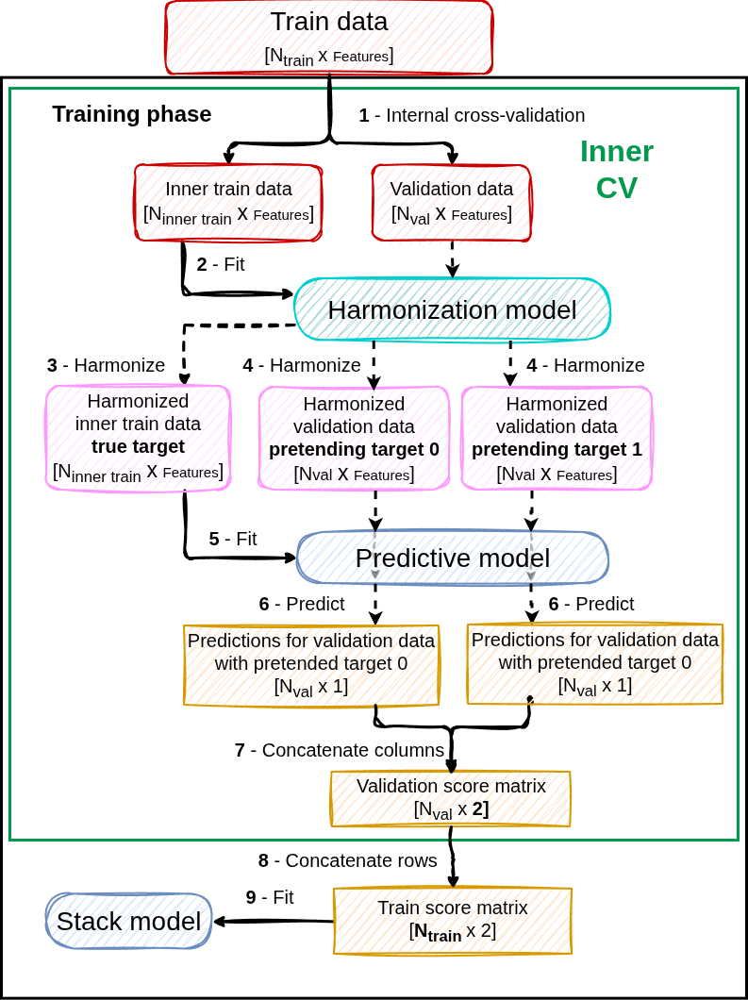
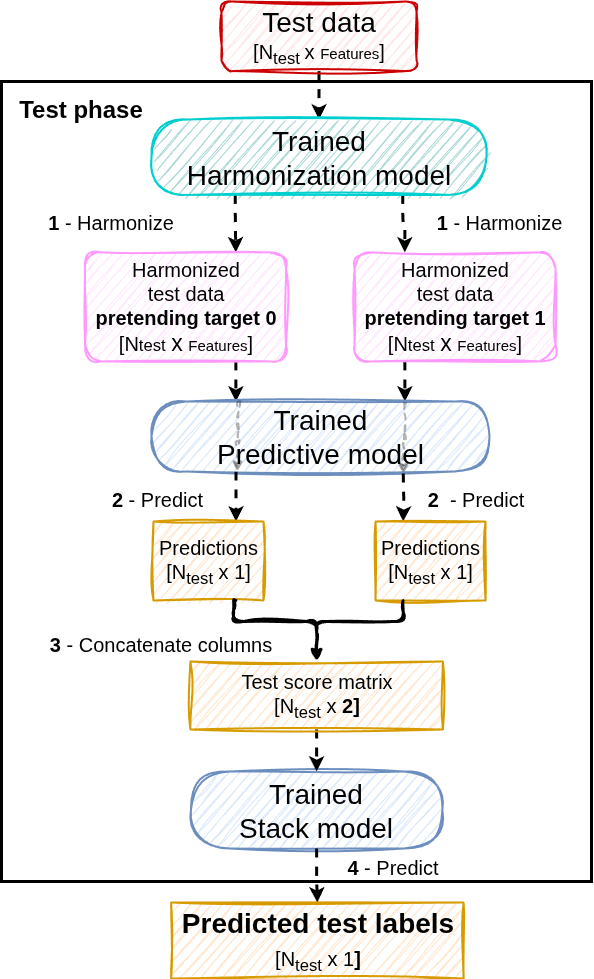

PrettYharmonize#
Cross-site class imbalance#
A common challenge in multi-site datasets occurs when class distributions differ across sites. For example:
Site A contains mostly control subjects
Site B contains mostly patients
In such cases, biological signal and site effects become confounded: the difference between the site means is partly the class difference. If harmonization removes site effects without accounting for the class, the biological signal is removed together with the site effect.
To address this, ComBat allows users to include biological variables as covariates to preserve during harmonization. However, if the covariate being preserved is the target of the machine learning (ML) model, the target must be known to harmonize the data, including the test data. In real prediction scenarios it is unknown, and using it creates data leakage [1]. Estimating the harmonization parameters on the training set only does not solve this: transforming the test data still requires their target.
Nieto et al. (2026) compare five schemes:
Scheme |
ComBat fitted on |
Test data harmonized with |
Leakage |
|---|---|---|---|
Unharmonized |
— |
— |
none (site effects remain) |
No target |
train, target not preserved |
— |
none, but the signal is removed under site–target dependence |
WDH (whole data harmonization) |
train and test, target preserved |
true test labels |
test data and labels |
TTL (test target leakage) |
train, target preserved |
true test labels |
test labels |
PrettYharmonize |
train, target preserved |
every pretended label |
none |
The method#
PrettYharmonize (pretend target Y harmonize) integrates ComBat-based harmonization into ML pipelines without requiring the target during inference [1]. It is a wrapper around three models, each given as an instance with its parameters set:
harm_model: a ComBat-based harmonization model (NeuroComBat,CovBatorComBatGAM). The target is always preserved when it is fitted and pretended when data are harmonized for prediction.base_model: the predictive model trained on the harmonized data. The defaults standardize the features first: ComBat returns data in the original feature units, and penalized linear models assume comparable feature scales. The scaler is part of the base model, so it is refitted in every inner fold and does not leak.stack_model: the model that turns the base model’s scores for all pretended targets into the prediction.


Training (binary example):
Split the training data into
cvinner folds (5 by default, stratified by site × class).In each inner fold, fit
harm_modelwith the target preserved on the inner-training data.Harmonize the inner-training data with their true labels.
Harmonize every validation sample once per pretended label (as class 0, as class 1, …).
Fit the base model on the harmonized inner-training data.
Score every pretended version of the validation samples.
Concatenate the scores column-wise: the validation score matrix.
Stack the validation score matrices of all folds row-wise: the out-of-fold score matrix (
score_matrix_).Fit the stack model to predict the true label from the score matrix.
Each validation sample is also harmonized with its true label by the fold’s harm_model, which never saw it: this gives the out-of-fold (OOF) harmonized training data, returned by fit_transform (and stored in harmonized_data_ with return_harmonized_data=True). Using the true label is legitimate here: these are training data.
Then, with fit_final_model=True (default), harm_model is refitted on all the training data, to harmonize new data, and base_model on the OOF harmonized training data. OOF harmonized data resemble new data, which are harmonized by a model that did not see them; in-sample harmonized data are slightly over-fitted to their own labels. With fit_final_model=False, nothing is refitted: the cv inner-fold models are kept and their score matrices are averaged at prediction (as for the score matrix the stack model was trained on), at cv times the prediction cost.


Prediction: each sample is harmonized under every pretended label, scored by the base model, and the stack model predicts from the resulting score matrix. The true label is never used.
For regression, the pretended targets are values spread over the training range (regression_points, 10 by default), or a self-consistent target is searched for each sample (regression_search=True).
What does pretending change?#
For linear ComBat (NeuroComBat) with the target among the preserved covariates, feature \(g\) of a sample from site \(i\) is harmonized as
where \(z\) are the preserved covariates, \(\sigma_g\) the pooled residual standard deviation and \(\gamma^*\), \(\delta^*\) the (empirical Bayes) location and scale corrections in standardized units. This is affine in \(z\), so harmonizing the same sample with target \(t_1\) instead of \(t_0\) changes it by exactly
Consequences:
The location correction \(\gamma^*\) never depends on the pretended target. It is estimated with the target in the model (so it is not confounded by the class imbalance) and applied without the test label.
The pretended versions differ only through the site’s scale correction. With
mean_only=True, or for a site with \(\delta^* \approx 1\), all pretended versions coincide and the stack model simply uses the common score.For non-linear variants (e.g., ComBatGAM with the target as smooth covariate, or CovBat), the pretended versions can also differ through the non-linear terms.
Results reported in the paper#
Site–target dependent scenarios [1]:
Task (data) |
Metric |
Unharmonized |
No target |
WDH (leaky) |
TTL (leaky) |
PrettYharmonize |
|---|---|---|---|---|---|---|
Age regression (MRI) |
MAE (years) ↓ |
6.20 |
15.93 |
3.82 |
4.28 |
4.12 |
Sex classification (MRI) |
AUC ↑ |
0.969 |
0.703 |
0.975 |
0.967 |
0.968 |
Dementia vs MCI (ADNI) |
AUC ↑ |
0.813 |
0.638 |
0.839 |
0.838 |
0.843 |
Septic discharge (eICU) |
AUC ↑ |
0.766 |
0.572 |
0.800 |
0.790 |
0.859 |
PrettYharmonize matches or beats the leakage-prone schemes without using test labels, while removing the target from ComBat destroys the signal. When site and target are independent, all schemes perform similarly.
Usage#
from sklearn.linear_model import LogisticRegression
from sklearn.svm import SVC
from uniharmony.combat import NeuroComBat
from uniharmony.prettyharmonize import PrettYharmonizeClassifier
clf = PrettYharmonizeClassifier(
harm_model=NeuroComBat(empirical_bayes=True),
base_model=SVC(probability=True),
stack_model=LogisticRegression(),
)
X_train_harmonized = clf.fit_transform(X_train, y_train, sites_train) # training labels are used, as usual
y_pred = clf.predict(X_test, sites_test) # no test labels needed
proba = clf.predict_proba(X_test, sites_test)
X_test_harmonized = clf.transform(X_test, sites_test) # harmonized with the predicted labels
PrettYharmonizeClassifierandPrettYharmonizeRegressordefault toNeuroComBat()and linear models forbase_modelandstack_model.The target
yis always preserved byharm_model. It goes to its categorical covariates for classification (one-hot encoded continuous covariates forComBatGAM, which has none) and to its continuous covariates for regression (ComBatGAM: smooth covariates, unless already used).Other covariates to preserve are passed as
additional_covariates, a dict keyed by the covariate arguments ofharm_model, e.g.clf.fit(X, y, sites, {"categorical_covariates": sex, "continuous_covariates": age}). They must be known for the data to predict too, and are passed again topredict,predict_proba,transformandscore.scoreis the balanced accuracy (classification) or R² (regression). It is used by scikit-learn model selection tools when noscoringis given.Inside
sklearn.model_selection.cross_validate, route the sites with metadata routing (set_fit_request(sites=True),set_score_request(sites=True)); only the estimator’s ownscorereceives them. scikit-learn only splits array-like metadata, soadditional_covariatescannot be routed: use a manual cross-validation loop with covariates.
Using other ComBat-based models#
from uniharmony.combat import ComBatGAM, CovBat
from uniharmony.prettyharmonize import PrettYharmonizeClassifier, PrettYharmonizeRegressor
# CovBat: also harmonizes the covariance across sites
clf = PrettYharmonizeClassifier(harm_model=CovBat(pct_var=0.95))
clf.fit(X_train, y_train, sites_train)
# ComBatGAM: age as non-linear (smooth) covariate, required by ComBatGAM
clf = PrettYharmonizeClassifier(harm_model=ComBatGAM())
clf.fit(X_train, y_train, sites_train, {"smooth_covariates": age_train})
clf.predict(X_test, sites_test, {"smooth_covariates": age_test})
# ComBatGAM: predict age, preserved as a smooth (non-linear) effect
reg = PrettYharmonizeRegressor(harm_model=ComBatGAM())
reg.fit(X_train, age_train, sites_train)
Practical notes and limitations#
Sample size per site. ComBat estimates a variance per site, so every site needs at least 2 samples in every inner training fold (an informative error is raised otherwise). Use fewer folds (
cv) or merge very small sites.Perfect confounding. If the target (or a covariate) is constant within every site, its effect cannot be separated from the site effect, and an error is raised.
Residual site information under strong confounding. When site and target are strongly dependent and there is no real signal, all target-preserving schemes (WDH, TTL, PrettYharmonize) can stay somewhat above chance: the estimated target effect \(\hat\beta\) is fitted on few minority-class samples per site and part of its noise survives harmonization. This is not test-label leakage, but interpret above-chance results in such settings with care.
Cost. One fit trains
cv + 1harmonization and base models (cvwithfit_final_model=False). Prediction harmonizes and scores the data once per pretended target (timescvwithfit_final_model=False); slow harmonization models (e.g., ComBatGAM) make this proportionally slower.Spline ranges (ComBatGAM). Splines cannot extrapolate. PrettYharmonize sets the spline range of the smooth covariate to the range of the whole training data, so every inner fold can harmonize its validation samples. Data to predict must stay within that range (an informative error is raised otherwise). ComBatGAM’s other
fitoptions (df,degree, …) keep their defaults.
References#
Source code